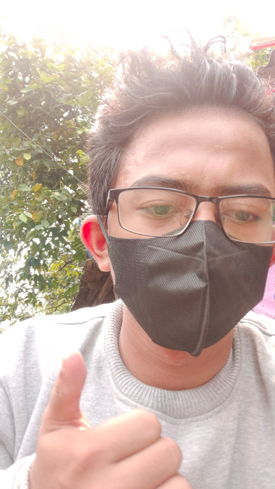

|

|
Profile Name
|
| Nama |
: Muhammad Syaiful Bachri |
| NIM |
: 0110122270 |
| Prodi |
: Sistem Informasi |
| Jenis Kelamin |
: Laki-laki |
| Alamat |
: Jalan Perintis 2 |
| Email |
: syaifulbachri.901@gmail.com |
| No |
: 081315189116 |
Saya Muhammad Syaiful Bachri mahasiswa STT Terpadu Nurul Fikri prodi Sistem Informasi, saya ingin meneruskan pendidikan saya
di bidang IT dan ingin berkarir sebagai backend developer.
Saya memiliki pengalaman magang saat di SMK yaitu sebagai perancang webstreaming di PT Matata Studio Indonesia selama 6 bulan,
dan saya di STT Terpadu Nurul Fikri ini ingin memperluas wawasan saya dalam bidang IT.